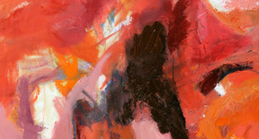
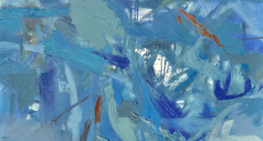
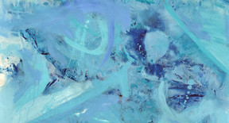
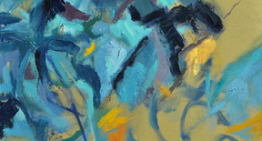
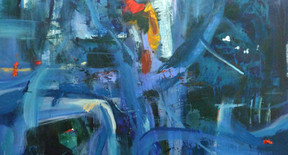

Akademik çalışmalar
Projeler ve araştırma alanları
Fikirlerin ve formların kesişiminde" data-en="Where ideas and forms intersect">Fikirlerin ve formların kesişiminde
Sanat üretimi, araştırma ve düşünceyi aynı çatı altında buluşturan kişisel bir çalışma alanı.
↓Sanat ve akademi, dünyayı anlamanın farklı ama birbirini besleyen yolları.
Bu site, Umut Kayapınar’ın sanatsal üretimlerini ve akademik çalışmalarını bir arada sunmak üzere hazırlanmıştır. Eserler ve araştırmalar, kendi bağlamları içinde ele alınır.
Yaklaşımı keşfet ↗2009 tarihli seçili eserler.

2009 · 01
2009 · 02
2009 · 03
2009 · 04
2009 · 052009 yılına ait seçili çalışmalar. Bir eseri büyütmek için üzerine tıklayın.
Yeni bakış açıları, sanatın ve araştırmanın
kesişiminde doğar.
SANAT · ARAŞTIRMA · DÜŞÜNCE
Araştırma başlıkları, yayınlar ve akademik faaliyetlere ilişkin bilgiler bu bölümde yer alacaktır.
Projeler ve araştırma alanları
Makaleler, kitaplar ve metinler
Sunumlar ve akademik buluşmalar
Bu alan, doğrulanmış çalışma ve yayın bilgileriyle güncellenecektir.
Eğitim geçmişi, akademik görevler, sergiler, çalıştaylar ve ödüllerden oluşan özgeçmiş.
Erciyes Üniversitesi, Kayseri, mezuniyet.
Akdeniz Üniversitesi Sosyal Bilimler Enstitüsü, Resim Anasanat Dalı yüksek lisans programı.
Mimar Sinan Güzel Sanatlar Üniversitesi Sosyal Bilimler Enstitüsü, Resim Anasanat Dalı Sanatta Yeterlik Programı.
Akdeniz Üniversitesi Sosyal Bilimler Enstitüsü, Resim Anasanat Dalı, araştırma görevlisi.
Akdeniz Üniversitesi Güzel Sanatlar Fakültesi Resim Bölümü, araştırma görevlisi.
Mimar Sinan Güzel Sanatlar Üniversitesi Sosyal Bilimler Enstitüsü’nde 35. Madde kapsamında araştırma görevlisi olarak görevlendirildi.
Akdeniz Üniversitesi Güzel Sanatlar Fakültesi Resim Bölümü, araştırma görevlisi.
“Kaligrafik Çağrışımlı Organik Formlar”, Olbia Sanat Galerisi, Antalya, Türkiye.
“Kaligrafik Çağrışımlı Organik Formlar II”, Mimarlar Odası, Antalya, Türkiye.
“Akdeniz Esintisi”, Colorida Sanat Galerisi, Lizbon, Portekiz (24 Ekim–5 Kasım).
“Uluslararası Akdeniz Sanat Fuarı 2012”, Cam Piramit, Antalya, Türkiye.
“Akdeniz Esintisi II”, Tophane-i Amire KSM Sarnıç Galerisi, İstanbul, Türkiye (9–22 Mart).
“Akdeniz Esintisi III”, Olbia Sanat Galerisi, Antalya, Türkiye (6–12 Kasım).
VI. Akdeniz Üniversitesi Şenlikleri karma sergisi.
“Umut & Ayhan Kayapınar Resim Heykel Sergisi”.
Akdeniz Üniversitesi Resim Anasanat Dalı yüksek lisans öğrencileri resim sergisi.
Akdeniz Üniversitesi Güzel Sanatlar Fakültesi öğretim elemanları Cumhuriyet Sergisi.
“Türk-Japon Çağdaş Güzel Sanatlar Genç Sanatçı-Öğretim Elemanları Sergisi” (10–17 Nisan).
“Gelecek ‘Akedemi’nin Seyir Defteri” karma sergisi (20 Mayıs–13 Haziran).
“Artıvisit Grup” resim sergisi, ARTİST 19. Uluslararası Sanat Fuarı, TÜYAP (31 Ekim–8 Kasım).
“Trans-form in Art Education / Sanat Eğitiminde Transform”, uluslararası karma sergi (15 Aralık–15 Ocak).
13. Reggio Emilia Uluslararası Sanat Fuarı, Neo Art Gallery, İtalya (21–24 Ekim).
“Cumhuriyetin 88. Yılında Son Dönem Türk Ressamların Çağdaş Yorumları”, T.C. Köstence Başkonsolosluğu, Romanya (2–25 Kasım).
“Yılın Genç Ressamı / Yılın Genç Heykeltıraşı Yarışması” finalistleri sergisi, İstanbul (17 Şubat–10 Mart).
“Postmodernist Yaklaşımlar”, Erciyes Sanat Uluslararası Sanat Etkinliği, Kayseri (2–14 Nisan).
“Ardiye”, Selanik, Yunanistan (1–3 Haziran).
“Grup Kente Uzak” resim sergisi, ARTİST 22. Uluslararası Sanat Fuarı, TÜYAP (17–24 Kasım).
“Hafıza ve Hatıra”, 50. Altın Portakal Festivali kapsamında, Antalya (7–14 Ekim).
“X-RAY” resim sergisi, ARTİST 23. Uluslararası Sanat Fuarı, TÜYAP (2–10 Kasım).
“Cumhuriyet’in 90. Yılında 90 Sanatçı 90 Eser”, Akdeniz Üniversitesi Güzel Sanatlar Fakültesi Sergi Salonu, Antalya (8–14 Kasım).
“Turkish Visual Art Exhibition in CAFA”, Çin Merkez Güzel Sanatlar Akademisi, Çin’de Türk yılı (Kasım–Ocak).
“12. Geleneksel Cumhuriyet Sergisi”, Akdeniz Üniversitesi Güzel Sanatlar Fakültesi Sergi Salonu, Antalya (27 Ekim–5 Kasım).
“X-RAY”, ARTİST 24. Uluslararası Sanat Fuarı, TÜYAP, İstanbul (8–16 Kasım).
“100. Yılında Çanakkale Ruhu 253 Sanatçı, 253 Eser”, Akdeniz Üniversitesi Güzel Sanatlar Fakültesi Sergi Salonu, Antalya (18–27 Mart).
“-sız, -siz, -suz, -süz without”, Mimarlar Odası, Antalya (10–24 Nisan).
“Akdenizin Renkleri”, Likya-Kaş Sanat Festivali, Antalya (9–14 Haziran).
13. Geleneksel Cumhuriyet Sergisi, Akdeniz Üniversitesi Güzel Sanatlar Fakültesi Sergi Salonu, Antalya (27 Ekim–13 Kasım).
“X-RAY”, ARTİST 25. Uluslararası Sanat Fuarı, TÜYAP, İstanbul (6–15 Kasım).
“Zahiri Çember 1/10”, Cadde Bostan Kültür Merkezi Sanat Galerisi, İstanbul (28 Ocak–22 Şubat).
“Empati”, Akdeniz Üniversitesi Güzel Sanatlar Fakültesi Sergi Salonu, Antalya (8–18 Mart).
“2/10 Karma Resim Sergisi” (22 Şubat–7 Mart).
“15 Nisan Dünya Sanat Günü ‘AKADEMİX’ Sergisi” (15 Nisan–6 Mayıs).
“Bazen Alaçatı Karma Sergisi” (9–20 Haziran).
“Akdenizin Renkleri III”, Likya-Kaş Sanat Festivali, Antalya (30 Haziran–2 Temmuz).
Hacettepe Üniversitesi I. Ulusal Mezuniyet Sergisi ve Sempozyumu (Haziran).
1. Üniversiteler Arası Osman Polat Resim Sempozyumu, Kemer, Antalya (7–18 Ağustos).
Uluslararası XIII. Resim Sempozyumu, Prag, Çek Cumhuriyeti (20–25 Ağustos).
III. Uluslararası Heykel Sempozyumu, Penza, Rusya; sonbaharda ressam olarak davet edildi.
“Sagalassos Resim Çalıştayı”, Burdur, Türkiye (12–19 Eylül).
20. Uluslararası Likya / Kaş Kültür ve Sanat Festivali Resim Çalıştayı (30 Haziran–2 Temmuz).
Fondation World and Universal Academy’nin Groningen, Hollanda’da düzenlediği Artistik Festival’de Dramatik Pentür dalında birincilik (28–29 Eylül).
Aynı festivalde Dramatik Pentür dalında özel ödül.
“Yılın Genç Ressamı / Yılın Genç Heykeltıraşı Yarışması” finalisti.
Türkiye, Almanya, Fransa, Avusturya, Rusya ve Çek Cumhuriyeti’ndeki özel koleksiyonlarda lavi, suluboya ve yağlıboya eserleri bulunan Umut Kayapınar, Akdeniz Üniversitesi’nde öğretim elemanı olarak çalışmakta ve sanat yaşamını sürdürmektedir.
Graduated from Erciyes University in Kayseri, Türkiye.
Completed the Master’s programme in Painting at Akdeniz University, Institute of Social Sciences.
Completed the Proficiency in Art programme in Painting at Mimar Sinan Fine Arts University, Institute of Social Sciences.
Research Assistant, Department of Painting, Akdeniz University Institute of Social Sciences.
Research Assistant, Department of Painting, Faculty of Fine Arts, Akdeniz University.
Appointed as a research assistant at Mimar Sinan Fine Arts University’s Institute of Social Sciences under Article 35.
Research Assistant, Department of Painting, Faculty of Fine Arts, Akdeniz University.
“Calligraphic-Associative Organic Forms”, Olbia Art Gallery, Antalya, Türkiye.
“Calligraphic-Associative Organic Forms II”, Chamber of Architects, Antalya, Türkiye.
“Mediterranean Breeze”, Colorida Art Gallery, Lisbon, Portugal (24 October–5 November).
“International Mediterranean Art Fair 2012”, Glass Pyramid, Antalya, Türkiye.
“Mediterranean Breeze II”, Tophane-i Amire KSM Sarnıç Gallery, Istanbul, Türkiye (9–22 March).
“Mediterranean Breeze III”, Olbia Art Gallery, Antalya, Türkiye (6–12 November).
6th Akdeniz University Festival group exhibition.
“Umut & Ayhan Kayapınar Painting and Sculpture Exhibition”.
Painting exhibition by postgraduate students of Akdeniz University’s Department of Painting.
Republic Exhibition by faculty members of Akdeniz University’s Faculty of Fine Arts.
“Turkish-Japanese Contemporary Fine Arts: Young Artists and Academics” exhibition (10–17 April).
“The Logbook of the Future ‘Academy’” group exhibition (20 May–13 June).
“Artıvisit Group” painting exhibition, ARTIST 19th International Art Fair, TÜYAP (31 October–8 November).
“Trans-form in Art Education”, international group exhibition (15 December–15 January).
13th Reggio Emilia International Art Fair, Neo Art Gallery, Italy (21–24 October).
“Contemporary Interpretations by Recent Turkish Painters in the 88th Year of the Republic”, Consulate General of Türkiye in Constanța, Romania (2–25 November).
Finalists’ exhibition, “Young Painter of the Year / Young Sculptor of the Year” competition, Istanbul (17 February–10 March).
“Postmodern Approaches”, Erciyes Art International Art Event, Kayseri (2–14 April).
“Ardiye”, Thessaloniki, Greece (1–3 June).
“Group Far from the City” painting exhibition, ARTIST 22nd International Art Fair, TÜYAP (17–24 November).
“Memory and Remembrance”, as part of the 50th Golden Orange Festival, Antalya (7–14 October).
“X-RAY” painting exhibition, ARTIST 23rd International Art Fair, TÜYAP (2–10 November).
“90 Artists, 90 Works in the 90th Year of the Republic”, Akdeniz University Faculty of Fine Arts Exhibition Hall, Antalya (8–14 November).
“Turkish Visual Art Exhibition in CAFA”, Central Academy of Fine Arts, China, Year of Türkiye in China (November–January).
“12th Traditional Republic Exhibition”, Akdeniz University Faculty of Fine Arts Exhibition Hall, Antalya (27 October–5 November).
“X-RAY”, ARTIST 24th International Art Fair, TÜYAP, Istanbul (8–16 November).
“The Spirit of Çanakkale in Its 100th Year: 253 Artists, 253 Works”, Akdeniz University Faculty of Fine Arts Exhibition Hall, Antalya (18–27 March).
“-sız, -siz, -suz, -süz without”, Chamber of Architects, Antalya (10–24 April).
“Colours of the Mediterranean”, Likya-Kaş Art Festival, Antalya (9–14 June).
13th Traditional Republic Exhibition, Akdeniz University Faculty of Fine Arts Exhibition Hall, Antalya (27 October–13 November).
“X-RAY”, ARTIST 25th International Art Fair, TÜYAP, Istanbul (6–15 November).
“Apparent Circle 1/10”, Caddebostan Cultural Centre Art Gallery, Istanbul (28 January–22 February).
“Empathy”, Akdeniz University Faculty of Fine Arts Exhibition Hall, Antalya (8–18 March).
“2/10” group painting exhibition (22 February–7 March).
“AKADEMİX” exhibition for World Art Day (15 April–6 May).
“Bazen Alaçatı” group exhibition (9–20 June).
“Colours of the Mediterranean III”, Likya-Kaş Art Festival, Antalya (30 June–2 July).
Hacettepe University 1st National Graduation Exhibition and Symposium (June).
1st Inter-University Osman Polat Painting Symposium, Kemer, Antalya (7–18 August).
13th International Painting Symposium, Prague, Czech Republic (20–25 August).
3rd International Sculpture Symposium, Penza, Russia; invited as a painter in autumn.
“Sagalassos Painting Workshop”, Burdur, Türkiye (12–19 September).
20th International Likya / Kaş Culture and Art Festival Painting Workshop (30 June–2 July).
First prize in Dramatic Painting at the Artistic Festival organised by the Fondation World and Universal Academy in Groningen, the Netherlands (28–29 September).
Special award in Dramatic Painting at the same festival.
Finalist in the “Young Painter of the Year / Young Sculptor of the Year” competition.
Umut Kayapınar’s wash, watercolour, and oil paintings are held in private collections in Türkiye, Germany, France, Austria, Russia, and the Czech Republic. He continues his artistic practice while working as an academic staff member at Akdeniz University in Antalya.
İLETİŞİM
İletişim için e-posta veya telefon üzerinden ulaşabilirsiniz.